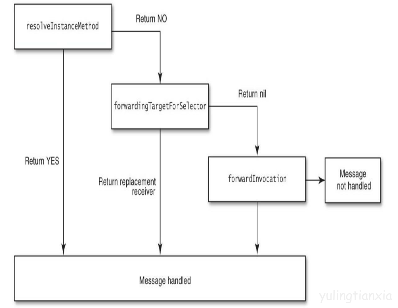

0、Runtime是什么？
Objective-C 是一个动态语言，它在 C 语言的基础上加入了面向对象特性和 Smalltalk 式的消息传递机制，这意味着需要一个运行时系统来动态得创建类和对象、进行消息传递和转发，Runtime就是这个运行时系统。理解 Objective-C 的 Runtime 机制可以帮我们更好的了解这个语言，适当的时候还能对语言进行扩展，从系统层面解决项目中的一些设计或技术问题。 学习Runtime ，要先理解它的核心：消息传递。
本文主要聊两个话题：
- runtime如何建立起支持objc语言的数据结构
- runtime如何建立起支持消息机制
1、Runtime如何建立起支持objc语言的数据结构
首先说一说静态语言与动态语言的区别，在C语言中函数名会被编译成全局唯一的符号，在编译时就已经确定了；在C++中函数名也会被编译成唯一的符号，只不过由于命名空间和类的存在，使得这个符号比较长；而在OC中函数名会被编译成objc_msgSend方法，在运行时找到对应的IMP函数实现代码执行，实际上编译时函数地址不确定，运行时根据Selector查找实现地址。那么Runtim是如何通过各种数据结构来实现这个机制呢。(由于涉及到的数据结构无法一一道来，所以只选择一些重要的数据结构来讲一下)
上文讲到的objc_msgSend方法，其实际是这样的：
|
|
SEL
objc_msgSend函数第二个参数类型为SEL，它是selector在Objc中的表示类型。selector是方法选择器，可以理解为区分方法的 ID，而这个 ID 的数据结构是SEL:
|
|
其实它就是个映射到方法的C字符串，你可以用 Objc 编译器命令 @selector() 或者 Runtime 系统的 sel_registerName 函数来获得一个 SEL 类型的方法选择器。
不同类中相同名字的方法所对应的方法选择器是相同的，即使方法名字相同而变量类型不同也会导致它们具有相同的方法选择器，于是 Objc 中方法命名有时会带上参数类型。
id
objc_msgSend 第一个参数类型为id，大家对它都不陌生，它是一个指向类实例的指针：
|
|
那objc_object又是啥呢，参考 objc-private.h 文件部分源码：
|
|
objc_object 结构体包含一个 isa 指针，类型为 isa_t 联合体。根据 isa 就可以顺藤摸瓜找到对象所属的类。isa 这里还涉及到 tagged pointer 等概念。因为 isa_t 使用 union 实现，所以可能表示多种形态，既可以当成是指针，也可以存储标志位。
PS: isa 指针不总是指向实例对象所属的类，不能依靠它来确定类型，而是应该用 class 方法来确定实例对象的类。因为KVO的实现机理就是将被观察对象的 isa 指针指向一个中间类而不是真实的类，这是一种叫做 isa-swizzling 的技术。
class
Class 其实是一个指向 objc_class 结构体的指针：
|
|
而 objc_class 包含很多方法，主要都为围绕它的几个成员做文章：
|
|
objc_class 继承于 objc_object，也就是说一个 ObjC 类本身同时也是一个对象，为了处理类和对象的关系，runtime 库创建了一种叫做元类 (Meta Class) 的东西，类对象所属类型就叫做元类，它用来表述类对象本身所具备的元数据。类方法就定义于此处，因为这些方法可以理解成类对象的实例方法。每个类仅有一个类对象，而每个类对象仅有一个与之相关的元类。当你发出一个类似 [NSObject alloc] 的消息时，你事实上是把这个消息发给了一个类对象 (Class Object) ，这个类对象必须是一个元类的实例，而这个元类同时也是一个根元类 (root meta class) 的实例。所有的元类最终都指向根元类为其超类。所有的元类的方法列表都有能够响应消息的类方法。所以当 [NSObject alloc] 这条消息发给类对象的时候，objc_msgSend() 会去它的元类里面去查找能够响应消息的方法，如果找到了，然后对这个类对象执行方法调用。

上图实线是 superclass 指针，虚线是isa指针。 有趣的是根元类的超类是 NSObject，而 isa 指向了自己，而 NSObject 的超类为 nil，也就是它没有超类。
cache_t
|
|
_buckets 存储 IMP，_mask 和 _occupied 对应 vtable。
cache 为方法调用的性能进行优化，通俗地讲，每当实例对象接收到一个消息时，它不会直接在isa指向的类的方法列表中遍历查找能够响应消息的方法，因为这样效率太低了，而是优先在 cache 中查找。Runtime 系统会把被调用的方法存到 cache 中（理论上讲一个方法如果被调用，那么它有可能今后还会被调用），下次查找的时候效率更高。
bucket_t 中存储了指针与 IMP 的键值对：
|
|
Ojbc_method
|
|
objc_method_list 本质是一个有 objc_method 元素的可变长度的数组。一个 objc_method 结构体中有函数名，也就是SEL，有表示函数类型的字符串，以及函数的实现IMP。
IMP
IMP在objc.h中的定义是：
|
|
它就是一个函数指针，这是由编译器生成的。当你发起一个 ObjC 消息之后，最终它会执行的那段代码，就是由这个函数指针指定的。而 IMP 这个函数指针就指向了这个方法的实现。既然得到了执行某个实例某个方法的入口，我们就可以绕开消息传递阶段，直接执行方法，这在后面会提到。
你会发现 IMP 指向的方法与 objc_msgSend 函数类型相同，参数都包含 id 和 SEL 类型。每个方法名都对应一个 SEL 类型的方法选择器，而每个实例对象中的 SEL 对应的方法实现肯定是唯一的，通过一组 id 和 SEL参数就能确定唯一的方法实现地址；反之亦然。
2、runtime如何建立起支持消息机制
介绍了一些Runtime的重要的数据结构实现之后，是时候来聊最核心的消息传递机制了。一句话概括就是：Objc 中发送消息是用中括号（[]）把接收者和消息括起来，而直到运行时才会把消息与方法实现绑定。
在很多语言，比如 C ，调用一个方法其实就是跳到内存中的某一点并开始执行一段代码。没有任何动态的特性，因为这在编译时就决定好了。而在 Objective-C 中，[object foo]语法并不会立即执行 foo 这个方法的代码。它是在运行时给 object 发送一条叫 foo 的消息。这个消息，也许会由 object 来处理，也许会被转发给另一个对象，或者不予理睬假装没收到这个消息。多条不同的消息也可以对应同一个方法实现。这些都是在程序运行的时候决定的。
事实上，在编译时你写的 Objective-C 函数调用的语法都会被翻译成一个 C 的函数调用 - objc_msgSend() 。比如，下面两行代码就是等价的：
|
|
其实从上部分的许多结构定义也从中可以看出发送一条消息也就 objc_msgSend 做了什么事。举 objc_msgSend(obj, foo) 这个例子来说：
- 检测这个
selector是不是要忽略的。比如 Mac OS X 开发，有了垃圾回收就不理会retain,release这些函数了。 - 检测这个 target 是不是
nil对象。ObjC 的特性是允许对一个nil对象执行任何一个方法不会 Crash，因为会被忽略掉。 - 如果上面两个都过了，那就通过 obj 的 isa 指针找到它的 class ，然后开始查找这个类的
IMP，先从cache里面找，完了找得到就跳到对应的函数去执行。 - 如果
cache找不到就找一下方法分发表。 - 如果分发表找不到就到超类的分发表去找，一直找，直到找到
NSObject类为止。一旦找到 foo 这个函数，就去执行它的实现IMP - 如果还找不到就要开始进入动态方法解析了，后面会提到。
这里缓存使用的原因是一个 class 往往只有少数的函数会被经常调用，每个消息都需要遍历一次 objc_method_list 并不合理。如果把经常被调用的函数缓存下来，那可以大大提高函数查询的效率。这也就是 objc_class 中另一个重要成员 objc_cache 做的事情 - 再找到 foo 之后，把 foo 的 method_name 作为 key ，method_imp 作为 value 给存起来。当再次收到 foo 消息的时候，可以直接在 cache 里找到，避免去遍历 objc_method_list.
动态方法解析
这个过程其实用下面的图就能够大概知道它是怎么运作的。

如果方法实现没有找到会发生什么？如果我们什么都不做，程序会在运行时挂掉并抛出 unrecognized selector sent to … 的异常。但在异常抛出前，Objective-C 的运行时会经历三个步骤来补救：
- resolveMethod
- forwardingTargetForSelector
- forwardInvocation
（1）ResolveMethod
当 Runtime 系统在Cache和方法分发表中（包括超类）找不到要执行的方法时，Runtime会调用resolveInstanceMethod:或resolveClassMethod:来给程序员一次动态添加方法实现的机会。我们需要用class_addMethod函数完成向特定类添加特定方法实现的操作。如果你添加了函数并返回 YES， 那运行时系统就会重新启动一次消息发送的过程。如果 resolve 方法返回 NO ，运行时就会移到下一步：消息转发（Message Forwarding）。
（2）Fast forwarding
到这里Runtime 系统会再给我们一次偷梁换柱的机会，即通过重载- (id)forwardingTargetForSelector:(SEL)aSelector方法替换消息的接受者为其他对象。 如果此方法返回nil或self,则会进入消息转发机制(forwardInvocation:);否则将向返回的对象重新发送消息。ps如果想替换类方法的接受者，需要覆写 + (id)forwardingTargetForSelector:(SEL)aSelector 方法，并返回类对象。
（3）forwardInvocation
到这儿只有最后一步可以挽救了。在这时forwardInvocation:方法会被执行，我们可以重写这个方法来定义我们的转发逻辑。但是首先，Runtime系统会向对象发送methodSignatureForSelector:消息，并取到返回的方法签名用于生成NSInvocation对象。所以我们在重写forwardInvocation:的同时也要重写methodSignatureForSelector:方法，否则会返回 nil ，Runtime 则会发出 -doesNotRecognizeSelector: 消息，程序这时也就挂掉了。
|
|
该消息的唯一参数是个NSInvocation类型的对象——该对象封装了原始的消息和消息的参数。我们可以实现forwardInvocation:方法来对不能处理的消息做一些默认的处理，也可以将消息转发给其他对象来处理，而不抛出错误。
forwardInvocation:方法就像一个不能识别的消息的分发中心，将这些消息转发给不同接收对象。或者它也可以象一个运输站将所有的消息都发送给同一个接收对象。它可以将一个消息翻译成另外一个消息，或者简单的”吃掉“某些消息，因此没有响应也没有错误。forwardInvocation:方法也可以对不同的消息提供同样的响应，这一切都取决于方法的具体实现。该方法所提供是将不同的对象链接到消息链的能力。
3、总结
Objective-C 向对象发送消息会经过以下几个步骤：
- 检测这个
selector是不是要忽略的，检测这个 target 是不是nil对象等准备工作。 - 在缓存或者对象类的 dispatch table 中尝试找到该消息。如果找到了，跳到相应的函数IMP去执行实现代码；
- 如果没有找到，Runtime 会发送
+resolveInstanceMethod:或者+resolveClassMethod:尝试去 resolve 这个消息； - 如果 resolve 方法返回 NO，Runtime 就发送
-forwardingTargetForSelector:允许你把这个消息转发给另一个对象； - 如果没有新的目标对象返回， Runtime 就会发送
-methodSignatureForSelector:和-forwardInvocation:消息。你可以发送-invokeWithTarget:消息来手动转发消息或者发送-doesNotRecognizeSelector:抛出异常。